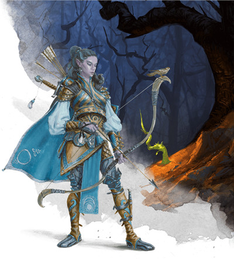
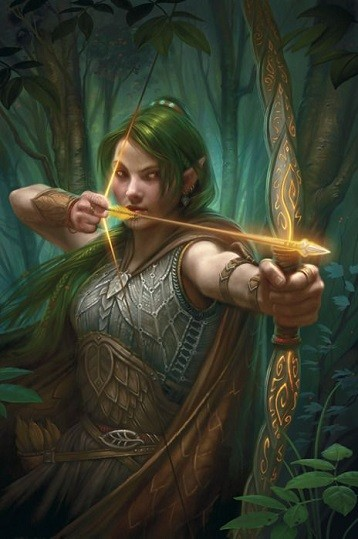
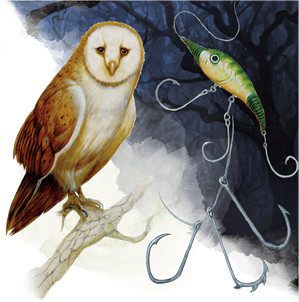

Le rôdeur D&D 5 pour les nuls
Vous êtes un rôdeur. Votre talent à l'arc et à l'épée rivalise avec celui d'un guerrier et vous possédez un pouvoir magique similaire à celui d'un druide. Vous bénéficiez en outre d'autres capacités en plus de celles liées aux sorts et à l'acier. Votre connexion avec la nature est à la fois magique et naturelle, vos compétences de survie ont été perfectionnées par des années d'expérience dans les régions les plus sauvages du monde, et vous possédez également des pouvoirs de perception surhumains en extérieur. Les guerriers peuvent vous surpasser en termes de capacité martiale brute, et les clercs et les druides auront accès à des sorts plus puissants que vous au cours de leur carrière d'aventurier, mais votre polyvalence et votre maîtrise de la nature sauvage font de vous un atout précieux pour n'importe quel groupe.
Cette aide de jeu vous guidera à travers les décisions que devez prendre durant les cinq premiers niveaux de votre classe et vous fournira des suggestions pour faire les meilleurs choix selon le type de rôdeur que vous voulez jouer. Lorsque vous jouerez votre expert en survie, vous constaterez que chaque rôdeur a une personnalité et un style différents. Ils se battent tous de manière unique en utilisant des tactiques différentes, en utilisant différentes armes et différents sorts en fonction de leur archétype. Vous découvrirez aussi les options emblématiques qui font que le rôdeur se démarque des autres classes de D&D, tout en vous indiquant où vous pouvez faire des choix qui vous aideront à rendre votre personnage unique.
Créer votre rôdeur
Sans aller jusqu'à parler d'optimisation, la première étape pour bien jouer votre classe est de construire votre personnage efficacement.
- Choisissez votre race. N'importe laquelle peut faire un bon rôdeur, mais les races naturellement sages et habiles sont particulièrement bien adaptées. La Dextérité et la Sagesse sont les caractéristiques les plus utiles car la première vous permet d'infliger plus de dégâts avec vos attaques et d'améliorer votre classe d'armure, et la deuxième augmente la puissance de vos sorts et compétences vitales comme Perception et Survie. Les elfes de bois sont l'archétype des rôdeurs avec leurs bonus de Dextérité et de Sagesse. Leur trait racial Cachette naturelle vous aide également à vous cacher dans un terrain naturel, vous convertissant en un excellent chasseur. Legolas n'est pas un rôdeur emblématique par hasard. Mais Aragorn est le rôdeur le plus emblématique de toute la fantaisie et les humains de D&D perpétuent bien son héritage, leurs valeurs de caractéristiques arrondies et leur accès rapide à un don (si vous utilisez cette option de l'humain) étant bien utiles.
- Choisissez la classe de rôdeur (évidemment !).
- Choisissez des compétences qui correspondent à ce que vous voulez que soit votre personnage. De nombreux rôdeurs se spécialisent dans le pistage, rendant les compétences comme Perception et Survie indispensables à leur réussite. Ceux qui travaillent avec des animaux devraient maîtriser la compétence Dressage, et ceux qui souhaitent réaliser des acrobaties comme Legolas seraient bien avisés de maîtriser Acrobaties.
Quel type de rôdeur ?
Pensez ensuite au rôle que vous voulez remplir dans le groupe. D&D n'est pas un jeu solo, donc vous devriez penser un peu au fonctionnement de votre groupe lors de la construction de votre personnage. Une façon de le faire est d'examiner le rôle spécifique que votre personnage va jouer en son sein. Si vous voulez traquer les ennemis et les tuer rapidement, le rôle Offensif est pour vous. Si vous considérez que se protéger et rester en vie est plus important que de faire des dégâts considérables, considérez le rôle Défensif. Enfin, si vous préférez améliorer la puissance de votre groupe plutôt que d'agir en première ligne, le rôle de Soutien est celui qui convient le mieux.
Ceci dit, le rôdeur est une classe de touche-à-tout, donc vous aurez de nombreuses d'options pour faire des choses en dehors du rôle que vous aurez choisi. De plus, votre rôle ne deviendra important qu'à partir du niveau 3, quand vous choisirez votre archétype (aussi appelée sous-classe), même si avant cela vous aurez beaucoup d'options pour rendre votre personnage unique, comme le choix du style de combat, le choix des armes et la sélection des sorts. Cette « période de formation » précoce vous permettra de bien définir la voie que vous souhaitez emprunter pour le reste de la campagne.
Offensif
Les rôdeurs qui cherchent à chasser les proies les plus dangereuses seraient bien avisés d'avoir un arc long pour combattre à distance et une épée longue ou deux épées courtes pour les combats au corps à corps. Selon votre préférence, choisissez le style Combat à deux armes ou Archerie au niveau 2, et choisissez l'archétype du chasseur ou du maître des bêtes au niveau 3. Les maîtres des bêtes ont également un compagnon animal polyvalent qui leur permet de remplir un rôle de soutien.
Défensif
Si vous souhaitez vous protéger et, si l'humeur vous en dit, protéger également vos alliés, vous devriez jouez un rôle défensif dans le groupe et tenter de survivre à vos ennemis. Le meilleur archétype pour jouer de manière défensive est le tueur de monstres du Xanathar's Guide to Everything, qui prend un rôle actif dans la frustration des plans de ses ennemis.
Soutien
Les rôdeurs n'ont pas beaucoup d'options axées sur le soutien, mais il existe des archétypes qui capitalisent et améliorent leurs capacités naturellement orientées utilitaires. Le compagnon animal du maître des bêtes vous permet par exemple de soutenir votre groupe tout en vous battant comme un rôdeur offensif.
Créer votre rôdeur - la suite
- Placez votre valeur de caractéristique la plus élevée en Dextérité si vous voulez vous concentrer sur le tir à l'arc et/ou le combat à deux armes. Si vous souhaitez plutôt utiliser des armes comme les épées longues ou les haches d'armes, placez votre valeur de caractéristique la plus élevée en Force. Votre deuxième plus forte valeur devrait être la Sagesse, pour stimuler vos sorts. Si vous êtes prêt à sacrifier votre puissance d'attaque pour rendre votre magie plus puissante, vous pouvez même inverser cet ordre et placer votre meilleure valeur en Sagesse.
- Choisissez un historique qui colle avec le concept de votre personnage. C'est une opportunité pour être créatif ! Comment êtes-vous devenu rôdeur ? Peut-être que vos parents ont été tués par des orcs et que vous êtes devenu un chasseur de primes pour payer vos auberges tout en traquant les tueurs de vos parents, ou peut-être étiez-vous un soldat qui a été séparé de son unité sur le chemin du retour et qui a dû survivre dans le désert jusqu'à ce qu'il retrouve le chemin de la civilisation.
- Enfin, déterminez votre équipement.
- Pour le choix entre une armure d'écailles ou une armure de cuire armure de cuir, choisissez l'armure de cuir si votre Dextérité est supérieure à votre Force, ou l'armure d'écailles si votre Force est supérieure à votre Dextérité.
-
Pour le choix entre deux épées courtes ou deux armes courantes de corps à corps, choisissez les épées courtes si vous envisagez de choisir le style Combat à deux armes au niveau 2, ou les deux armes courantes de corps à corps si vous voulez lancer des armes comme un javelot ou une hache (les armes de lancer sont avant tout considérées comme des armes de corps à corps).
-
Choisissez le sac d'exploration souterraine si vous prévoyez de passer beaucoup de temps sous terre dans des donjons ou des ruines, mais en général il est préférable de choisir le sac d'explorateur.
Se battre comme un rôdeur
Vous êtes un combattant qui se bat avec la vitesse et la férocité d'un animal sauvage. Vous pouvez tenir en première ligne, vos points de vie étant comparables à ceux d'un guerrier, mais avec des défenses légèrement inférieures à celles des guerriers et des paladins en armures lourdes. Vous pouvez infliger de sérieux dégâts à vos ennemis, mais devez rester mobile pour éviter d'en subir trop.
Tout comme un ensorceleur, les rôdeurs doivent apprendre des sorts pour pouvoir en lancer, mais vos sorts sont toujours préparés dès l'instant que vous les avez appris. Vous ne connaissez qu'un certain nombre de sorts, en commençant par 2 sorts au niveau 2, puis cela augmente lentement par la suite.
Enfin, sachez que certains archétypes de rôdeurs vous accordent des sorts bonus. Une fois que vous avez choisi votre sous-classe au niveau 3, ces sorts bonus sont toujours préparés et peuvent vous aider à compléter votre arsenal. Si cette aide de jeu vous suggère de préparer un sort que vous avez déjà en tant que sort de bonus, choisissez simplement un autre sort à préparer. Notez aussi que toutes les sous-classes de rôdeur du Xanathar's Guide to Everything octroient des sorts bonus, mais aucune de celles du Player's Handbook ne le permet. Vous pouvez donc si vous le souhaitez, en tant que règle maison, décider de donner aussi au chasseur et au maître des bêtes une liste de sorts bonus.
Au niveau 1, vous obtenez les capacités Ennemi juré et Explorateur-né, qui vous permettent de vous spécialiser dans le pistage et d'augmenter vos connaissances de certains ennemis. Cela vous permet de lier certains éléments de votre histoire à votre ennemi favori initial (la famille d'Aragorn a été tuée par des orcs bien avant les événements du Seigneur des Anneaux). Explorateur-né vous offre un terrain favori sur lequel vos compétences de navigation et de survie sont plus efficaces. Aucune de ces capacités n'octroient de bonus au combat, mais elles favorisent un autre pilier de D&D : l'exploration. Ne vous inquiétez pas le choix initial de votre ennemi ou de votre terrain favori ; vous obtiendrez plus de choix à des niveaux plus élevés.
Au niveau 2, vous choisissez un Style de combat. Ces styles ont tendance à être assez spécialisés, alors référez-vous aux rôles décrits ci-dessous. Vous avez également la possibilité de lancer des sorts à ce niveau. Et là aussi, votre sélection de sort sera basée sur le rôle que vous souhaitez remplir au sein de votre groupe.
Au niveau 3, vous choisissez votre archétype. Cette sous-classe aura un impact important sur votre façon de jouer et constitue un facteur déterminant de votre rôle dans le groupe. Vous bénéficiez également de la capacité Sens primitifs, qui vous permet de dépenser un emplacement de sort pour identifier la présence d'un certain type de créature surnaturelle dans un rayon de 1,5 kilomètre autour de vous, mais pas leur emplacement ni leur nombre.
Au niveau 4, vous gagnez Amélioration de caractéristiques ou un don. La plupart des rôdeurs veulent maximiser leur valeur de Dextérité ou de Sagesse le plus rapidement possible pour être de meilleurs combattants ou lanceurs de sorts, mais vous pouvez choisir un don pour accentuer votre rôle dans le groupe.
Au niveau 5, vous gagnez Attaque supplémentaire, ce qui vous permet d'attaquer deux fois au lieu d'une lorsque vous prenez l'action Attaquer et qui signifie une augmentation importante de vos dégâts potentiels.
Offensif
En tant que rôdeur offensif, vous voulez être puissant et mobile. Si vous avez besoin de sacrifier une armure ou des points de vie pour que cela soit le cas, allez-y. De plus, les rôdeurs obtiennent une liste de sorts qui proviennent généralement à la magie druidique, mais qui comprend également quelques options uniques et puissantes. Puisque vous avez si peu d'emplacements de sorts (et que vous êtes capable de préparer si peu de sorts), il est généralement préférable de vous appuyer sur votre rôle offensif plutôt que de vous disperser. Toutefois, au final c'est vous qui décidez de votre sélection de sorts, même si vous devriez choisir des sorts en fonction du contenu de votre campagne.
Au niveau 2, choisissez un Style de combat qui complète votre plus haute caractéristique : la Force ou la Dextérité. Si vous avez choisi la Force, vous devriez choisir le style Duel et utiliser une épée longue (ou similaire) et un bouclier. Si vous avez choisi la Dextérité et que vous voulez vous spécialiser dans les combats au corps à corps, choisissez le style Combat à deux armes et utilisez deux épées courtes ou cimeterres. Si vous avez choisi la Dextérité et que vous voulez vous concentrer sur le tir de précision, choisissez le style Archerie.
Au niveau 2 encore, vous apprenez deux sorts de rôdeur de niveau 1. Ce n'est pas beaucoup, alors misez tout sur l'attaque. Deux bons sorts à choisir sont frappe piègeante et marque du chasseur. Sachez que ces deux sorts nécessitent votre concentration, vous ne pouvez donc pas les avoir actifs en même temps. Lancez-les judicieusement...
Au niveau 3, vous choisissez un archétype de rôdeur entre le chasseur et le maître des bêtes. Aucune de ces sous-classes ne vous accorde de bonus d'après les règles du Player's Handbook. Si vous choisissez la voie du chasseur, au niveau 3, la capacité Proie du chasseur est en fait un choix entre trois capacités. Tueur de colosses encourage la lutte contre des monstres puissants et uniques, et octroie des dégâts supplémentaires contre les créatures blessées. Tueur de géants vous permet d'utiliser votre réaction pour attaquer un monstre de taille G ou supérieure chaque fois qu'il vous manque dans un rayon de 1,50 mètre (probablement le plus faible des trois choix). Briseur de hordes encourage la lutte contre de grands groupes de monstres plus faibles car il permet d'attaquer deux créatures l'une à côté de l'autre. Vous avez le choix, mais Tueur de colosses est généralement la meilleure option. Si vous choisissez la voie du maître des bêtes, vous obtenez un compagnon animal qui combattra à vos côtés tant que vous utilisez votre action pour lui demander d'attaquer. Assurez-vous de lire attentivement la description de cette capacité car elle est assez précise en termes de capacités et bonus qu'elle accorde à votre compagnon. Le serpent volant, le serpent venimeux géant, la panthère et le loup sont parmi les meilleurs choix. Le serpent volant peut sembler faible au début, mais son trait Vol agile et ses dégâts de poison élevés lui permettent de survoler le champ de bataille, de se projeter depuis votre bras pour frapper un ennemi, puis de revenir en arrière vers vous. Ne sous-estimez pas cette petite créature.
Au niveau 3 encore, vous apprenez un autre sort de rôdeur de niveau 1. Profitez de cette occasion pour compléter votre arsenal en choisissant un sort utilitaire ou de soutien. Soins est toujours un bon choix, surtout si votre groupe manque de guérisseur. Lien avec une bête peut être un choix amusant pour un maître des bêtes, et frappe piègeante est amusant si vous êtes un joueur intelligent qui aime créer des pièges.
Au niveau 4, vous devriez prendre Amélioration de caractéristiques. Si vous êtes un archer, envisagez plutôt de prendre le don Tireur d'élite qui vous permet de faire des dégâts considérables au détriment de la précision, mais le compromis en vaut généralement la peine.
Au niveau 5, vous obtenez Attaque supplémentaire et accédez aux sorts de niveau 2. Vous apprenez également un nouveau sort de niveau 1 ou 2. Profitez de cette occasion pour apprendre l'un de vos nouveaux puissants sorts de niveau 2. Il n'y a pas beaucoup de sorts offensifs de niveau 2, alors pensez à prendre un sort utilitaire comme passage sans trace. Si vous avez besoin de plus de puissance, cordon de flèches est une bonne option.
Défensif
Un rôdeur défensif se veut mobile et discret. Comme vous ne pouvez pas porter les armures les plus lourdes, rester caché est donc un très bon choix. Cela dit, vous avez accès à la fois aux boucliers et aux armures moyennes, donc jouer un rôdeur protecteur n'est pas non plus impossible.
Au niveau 2, choisissez le style Défense. Cela vous donne un bonus de +1 à la CA si vous portez une armure, ce qui équivaut à un objet magique rare.
Au niveau 2 encore, vous apprenez deux sorts de rôdeur de niveau 1. Deux bons sorts à choisir sont nappe de brouillard et marque du chasseur. Sachez que ces deux sorts nécessitent votre concentration, vous ne pouvez donc pas les avoir actifs en même temps. Nappe de brouillard est un bon moyen pour se dissimuler et fuir de vos ennemis ou pour les approcher sans être vu.
Au niveau 3, vous choisissez l'archétype de rôdeur tueur de monstres et obtenez trois capacités de niveau 3. La première est un sort bonus, protection contre le mal et le bien, qui peut vous protéger, vous ou un allié, contre un type de créatures surnaturelles. Assurez-vous d'avoir de l'eau bénite à dépenser pour ce sort qui coûte 25 po. Vous obtenez également la capacité Sens du chasseur qui vous permet de connaitre les immunités, les vulnérabilités ou les résistances d'une créature. Enfin, Proie du tueur permet d'infliger des dégâts supplémentaires à une seule créature lorsque vous l'attaquez. Notez que la plupart des premières capacités du tueur de monstres sont offensives par nature, mais la sous-classe dans son ensemble est finalement plus défensive, en particulier lorsque vous gagnez des niveaux.
Au niveau 3 encore, vous apprenez un autre sort de rôdeur de niveau 1. Profitez de cette occasion pour compléter votre arsenal en choisissant un sort utilitaire ou de soutien. Soins est toujours un bon choix, surtout si votre groupe manque de guérisseur. Détection de la magie est également utile et peut vous aider, vous et votre groupe, à rester en sécurité en présence d'enchantements.
Au niveau 4, vous devriez prendre Amélioration de caractéristiques. Si vous êtes un archer et que vous sentez que votre puissance offensive doit être améliorée, envisagez plutôt de prendre le don Tireur d'élite qui vous permet de faire des dégâts considérables au détriment de la précision, mais le compromis en vaut généralement la peine. Si vous pensez que vos défenses doivent être renforcées, le don Spécialiste des armures intermédiaires pourrait vous donner le coup de pouce dont vous avez besoin.
Au niveau 5, vous obtenez Attaque supplémentaire et accédez aux sorts de niveau 2. Vous apprenez également un nouveau sort de niveau 1 ou 2. Profitez de cette occasion pour apprendre l'un de vos nouveaux puissants sorts de niveau 2. Passage sans trace est sans aucun doute le sort de discrétion le plus puissant du jeu et peut-être même le sort le plus puissant du jeu, point barre. Peau d'écorce est une option défensive simple et puissante.
Soutien
Le soutien est peut-être le rôle le moins conventionnel des rôdeurs. Tous ont des capacités de soutien au groupe à leur disposition, mais on en arrive à les oublier si un guérisseur dédié comme un clerc est présent. Néanmoins, vous avez accès à des capacités et des sorts puissants qui peuvent être très utiles.
Au niveau 2, choisissez le Style de combat Archerie ou Défense. Archerie vous aidera à combattre à distance, ce qui vous permettra de faire la différence au combat même lorsque vous n'avez plus de sorts.
Au niveau 2 encore, vous apprenez deux sorts de rôdeur de niveau 1. Deux bons sorts à choisir sont soins et marque du chasseur. Même si vous êtes un personnage de soutien, marque du chasseur est un sort puissant et polyvalent qui s'intègre dans l'arsenal de tous les rôdeurs.
Au niveau 3, vous choisissez l'archétype de rôdeur maître des bêtes et obtenez un compagnon animal qui combattra à vos côtés tant que vous utilisez votre action pour lui demander d'attaquer. Assurez-vous de lire attentivement la description de cette capacité car elle est assez précise en termes de capacités et bonus qu'elle accorde à votre compagnon. Le serpent volant, le serpent venimeux géant, la panthère et le loup sont parmi les meilleurs choix. Le serpent volant peut sembler faible au début, mais son trait Vol agile et ses dégâts de poison élevés lui permettent de survoler le champ de bataille, de se projeter depuis votre bras pour frapper un ennemi, puis de revenir en arrière vers vous. Ne sous-estimez pas cette petite créature.
Notez que vous pouvez utiliser votre action pour commander à votre compagnon animal d'utiliser l'action Aider. Si vous envoyez votre compagnon loin de vous, cela vous permet essentiellement d'Aider à distance, comme un roublard conspirateur. D'ailleurs, en parlant de roublards, votre compagnon animal compte comme un allié, ce qui permet aux roublards d'activer plus facilement leur Attaque sournoise si votre compagnon reste adjacent à vos ennemis. De plus, une fois que vous avez atteint le niveau 7, vous pouvez demander à votre compagnon d'Aider en tant qu'action bonus, ce qui rend votre « Aide à distance » encore plus puissante, car vous pouvez octroyer un avantage à un allié tout en réalisant vos propres attaques.
Au niveau 3 encore, vous apprenez un autre sort de rôdeur de niveau 1. Si vous sentez que votre puissance offensive doit être améliorée, frappe piègeante vous aidera à blesser vos ennemis et à les éloigner de vous. Amitié avec les animaux est également un excellent moyen d'améliorer votre utilité hors combat.
Au niveau 4, vous devriez prendre Amélioration de caractéristiques. Si vous êtes un archer et que vous sentez que votre puissance offensive doit être améliorée, envisagez plutôt de prendre le don Tireur d'élite qui vous permet de faire des dégâts considérables au détriment de la précision, mais le compromis en vaut généralement la peine. Si vous pensez que vos défenses doivent être renforcées, le don Spécialiste des armures intermédiaires pourrait vous donner le coup de pouce dont vous avez besoin. Le don Tueur de mage pourrait également vous aider à protéger votre groupe en perturbant les tactiques ennemies si des lanceurs de sorts ennemis vous rendent la vie difficile.
Au niveau 5, vous obtenez Attaque supplémentaire et accédez aux sorts de niveau 2. Vous apprenez également un nouveau sort de niveau 1 ou 2. Profitez de cette occasion pour apprendre l'un de vos nouveaux puissants sorts de niveau 2. Passage sans trace est sans aucun doute le sort de discrétion le plus puissant du jeu et peut-être même le sort le plus puissant du jeu, point barre. Si vous passez beaucoup de temps dans des donjons, sens des pièges peut également vous éviter des ennuis. Enfin, restauration partielle est un sort de suppression de statut toujours utile.
Personnaliser son rôdeur
Votre rôdeur ne doit pas nécessairement être un clone d'Aragorn ou de Legolas. À D&D, ils remplissent plusieurs rôles : guerrier mystique du désert qui maîtrise la magie et l'empathie avec les animaux, mais aussi assassin des étendues sauvages qui traque sa proie comme Tarzan, rôdeur urbain qui se cache dans les rues sombres de Waterdeep comme un autre rôdeur le ferait dans une forêt, ou bien encore un drow assassin de l'Outreterre aussi familier avec les champignons bioluminescents de ce royaume souterrain qu'un autre rôdeur le serait avec les fleurs des zones humides.
La nature vous attend maintenant ! Ne vous limitez pas aux clichés et aux archétypes de la fantaisie classique, mais ne les écartez pas non plus systématiquement. Mon premier personnage à D&D était un rôdeur et un clone d'Aragorn, mais il est rapidement devenu un personnage à part entière avec sa propre histoire. Les souvenirs de sa célèbre malchance et de son casque enchanté vivront dans ma mémoire pour toujours. Les mauvaises idées peuvent parfois donner de grands personnages, alors ne vous inquiétez pas trop de votre premier concept. Allez-y, créez un personnage et amusez-vous !
Basé sur un article de James Haeck, traduit par blueace